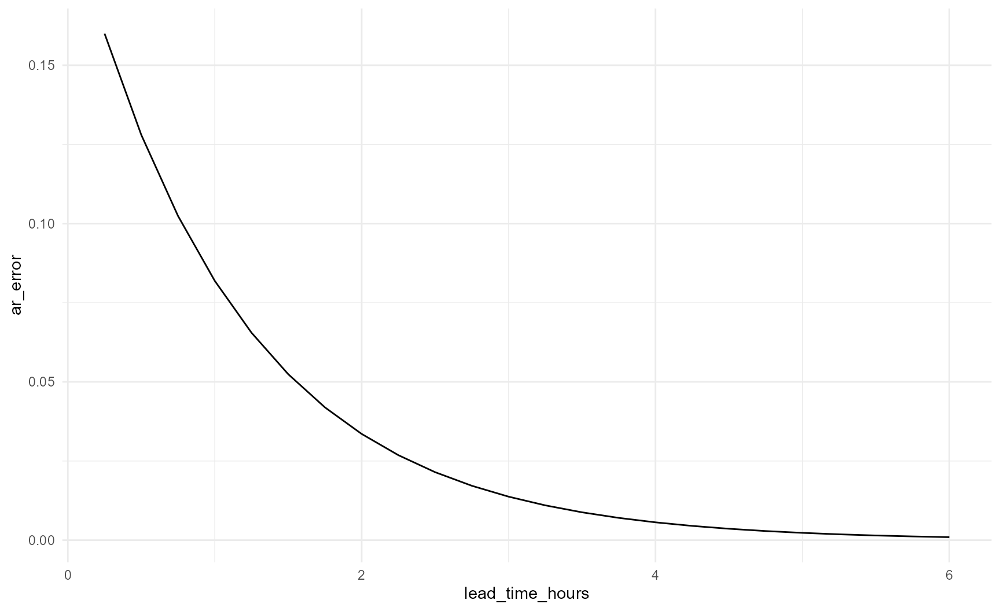
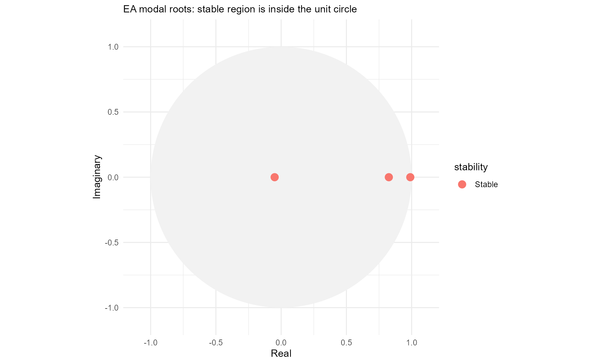

ARMA for Novice Flood Forecast Modellers
Source:vignettes/arma-for-novices.Rmd
arma-for-novices.RmdPurpose
This vignette explains AR and ARMA without assuming a background in time-series mathematics. It is written for flood forecast modellers who need to understand what an update is doing, judge whether its behaviour makes sense and know when to investigate the data rather than the parameters.
The current Environment Agency implementation in IMFS uses the autoregressive part of ARMA. People still often call the process ARMA because that is the name of the wider method and the underlying Delft-FEWS module.
What ARMA does
A hydrological or hydraulic model produces a simulated river level or flow. The simulation will rarely match the latest observation exactly. AR uses the recent difference between those two series to estimate how the difference may develop after the forecast starts.
flowchart LR
A[Observation]
B[Model simulation]
C[Recent model error]
D[AR model]
E[Projected error]
F[Updated forecast]
A --> C
B --> C
C --> D --> E --> F
B --> F
AR does not replace the forecasting model. It updates the model output.
The sign of the error
reach.postproc uses:
Suppose the observation is 1.20 m and the simulation is 1.00 m:
error = 1.20 - 1.00 = +0.20 mA positive error means the simulation is too low. A negative error means the simulation is too high.
calculate_model_error(
observed = c(1.20, 0.95),
simulated = c(1.00, 1.10)
)
#> [1] 0.20 -0.15The updated forecast is the simulation plus the projected error. A positive projected error raises the forecast. A negative projected error lowers it.
A simple AR model
The simplest AR model remembers one previous error. If its coefficient is 0.8, each new projected error retains 80% of the previous value.
Starting from 0.20 m:
Forecast start 0.200 m
15 minutes 0.160 m
30 minutes 0.128 m
45 minutes 0.102 mThe error fades because the coefficient is smaller than one.
simple_parameters <- ar_parameters(
coefficients = c(a_1 = 0.8),
label = "Simple AR(1) example"
)
simple_forecast <- forecast_ar(
simple_parameters,
initial_errors = 0.20,
steps = 24L,
time_step_minutes = 15
)
forecast_series(simple_forecast)
#> step lead_time_minutes lead_time_hours ar_error
#> <int> <num> <num> <num>
#> 1: 1 15 0.25 0.1600000000
#> 2: 2 30 0.50 0.1280000000
#> 3: 3 45 0.75 0.1024000000
#> 4: 4 60 1.00 0.0819200000
#> 5: 5 75 1.25 0.0655360000
#> 6: 6 90 1.50 0.0524288000
#> 7: 7 105 1.75 0.0419430400
#> 8: 8 120 2.00 0.0335544320
#> 9: 9 135 2.25 0.0268435456
#> 10: 10 150 2.50 0.0214748365
#> 11: 11 165 2.75 0.0171798692
#> 12: 12 180 3.00 0.0137438953
#> 13: 13 195 3.25 0.0109951163
#> 14: 14 210 3.50 0.0087960930
#> 15: 15 225 3.75 0.0070368744
#> 16: 16 240 4.00 0.0056294995
#> 17: 17 255 4.25 0.0045035996
#> 18: 18 270 4.50 0.0036028797
#> 19: 19 285 4.75 0.0028823038
#> 20: 20 300 5.00 0.0023058430
#> 21: 21 315 5.25 0.0018446744
#> 22: 22 330 5.50 0.0014757395
#> 23: 23 345 5.75 0.0011805916
#> 24: 24 360 6.00 0.0009444733
#> step lead_time_minutes lead_time_hours ar_error
#> <int> <num> <num> <num>
plot_ar(simple_forecast)
If the coefficient exceeded one, the error would grow. If it were negative, the projected error would change sign every timestep.
Why use two or three recent errors?
One value tells us the current mismatch. Several values indicate whether the mismatch is steady, increasing, decreasing or changing sign.
flowchart LR
A[Oldest recent error]
B[Middle recent error]
C[Newest recent error]
D[Weighted AR calculation]
E[Next projected error]
F[Repeat]
A --> D
B --> D
C --> D
D --> E --> F
A third-order model uses three recent errors. It can represent richer short-term behaviour than AR(1), but the raw coefficients are much harder to interpret.
Coefficients and roots
The coefficients tell the computer how to calculate one step. Characteristic roots tell a modeller how the result behaves through time.
Think of each root as one pattern within the error forecast. A third-order model has three roots. Their contributions are added together.
A root tells us whether a contribution:
- fades;
- remains constant;
- grows;
- changes sign;
- oscillates.
parameters <- default_ar_parameters()
root_information <- roots(parameters)
root_table(root_information)
#> root_id root_real root_imaginary root_modulus lag_root_real
#> <int> <num> <num> <num> <num>
#> 1: 3 0.98961490 1.100114e-24 0.98961490 1.010494
#> 2: 2 0.82517187 -1.306909e-24 0.82517187 1.211869
#> 3: 1 -0.04978678 2.067952e-25 0.04978678 -20.085655
#> lag_root_imaginary lag_root_modulus raw_decay_time_steps decay_time_steps
#> <num> <num> <num> <num>
#> 1: -1.123324e-24 1.010494 95.7909755 95.7909755
#> 2: 1.919360e-24 1.211869 5.2038996 5.2038996
#> 3: -8.342810e-23 20.085655 0.3333327 0.3333327
#> effective_decay_time_steps decay_time_hours effective_decay_time_hours
#> <num> <num> <num>
#> 1: 95.7909755 23.94774387 23.9477439
#> 2: 5.2038996 1.30097489 1.3009749
#> 3: 0.2338708 0.08333317 0.0584677
#> oscillation_period_steps oscillation_period_hours is_growing is_persistent
#> <num> <num> <lgcl> <lgcl>
#> 1: Inf Inf FALSE FALSE
#> 2: Inf Inf FALSE FALSE
#> 3: 2 0.5 FALSE FALSE
#> is_oscillating modal_stability lag_stability display_order
#> <lgcl> <fctr> <fctr> <int>
#> 1: FALSE Stable Stable 1
#> 2: FALSE Stable Stable 2
#> 3: TRUE Stable Stable 3
plot_ar(root_information, root_definition = "modal")
Why are stable roots inside the circle?
The package follows the modal-root convention used in the Environment Agency guidance.
- Inside the unit circle means the contribution fades.
- On the circle means it persists.
- Outside the circle means it grows.
Some statistics books plot reciprocal lag roots. Their stable region is outside the circle. The two plots describe the same model from opposite root conventions.
flowchart TD
A{Which root definition?}
B[EA modal roots]
C[Reciprocal lag roots]
D[Stable inside the circle]
E[Stable outside the circle]
A --> B --> D
A --> C --> E
Decay time
Decay time describes how long a root remains important. After one decay time, a non-oscillating contribution has fallen to about 37% of its starting size.
A root can decay too quickly to add useful information. It can also remain influential for too long. The suitable timescale depends partly on catchment response, but the 2024 assessment criteria provide broad operational limits.
Oscillation
Oscillation means a contribution moves between positive and negative values. A negative real root has a period of two timesteps because it changes sign at every step.
Oscillation is normally undesirable when it remains visible. A very rapid oscillation can be acceptable if it also disappears almost immediately. The 2024 defaults contain one such root because it helps the model accommodate sharp changes in the recent error sequence.
Parameter assessment
A model passes only when it avoids the main forms of unacceptable mathematical behaviour.
flowchart TD
A[Start assessment]
B{Any growing root?}
C{Any root decays too slowly?}
D{Do all roots decay too quickly?}
E{Any unacceptable oscillation?}
F[FAIL]
G[PASS]
A --> B
B -- Yes --> F
B -- No --> C
C -- Yes --> F
C -- No --> D
D -- Yes --> F
D -- No --> E
E -- Yes --> F
E -- No --> G
assessment <- assess(parameters)
assessment@summary
#> [1] "Pass. All roots meet the accepted criteria."
assessment_table(assessment)
#> test_id test failed affected_roots
#> <char> <char> <lgcl> <list>
#> 1: order Permitted AR order FALSE
#> 2: a Exponential growth FALSE
#> 3: b Excessive decay time FALSE
#> 4: c All roots decay too quickly FALSE
#> 5: d Unacceptable oscillation FALSE
#> criterion
#> <char>
#> 1: permitted order
#> 2: no growing root
#> 3: maximum decay
#> 4: minimum useful decay
#> 5: oscillation ratioA pass does not prove that every update improves the forecast. It means the parameter set avoids the principal mathematical failure modes.
Why a passing model can still behave poorly
The roots are fixed by the parameters, but their weights depend on the recent errors. A steady error history usually gives a smooth projection. A sharp jump, noisy observation or crossing between observed and simulated series can produce a much stronger response.
Assess parameters across several events and several forecast start times.
Timing errors
AR cannot reliably correct a future timing error. It can react only after a timing difference appears in the recent observations. The updated peak may move slightly because a changing correction is added to the simulation, but this is not a dependable timing correction.
Zero cut-off
A sufficiently negative projected error can make the unconstrained update negative. IMFS may replace the displayed value with zero.
flowchart LR
A[Simulation]
B[Projected error]
C[Add values]
D{Below zero?}
E[Display zero]
F[Display calculated value]
G[Underlying AR series continues]
A --> C
B --> C
C --> D
D -- Yes --> E --> G
D -- No --> F
The cut-off changes the displayed update. It does not change the underlying AR recurrence.
Data gaps
The model needs a complete recent error sequence. Gaps can originate in telemetry, model output, timestamp alignment or an incomplete rating curve.
Do not change AR parameters until the input series have been checked.
Ratings
A rating converts level to flow or flow to level. Ratings are normally nonlinear. An additive update in flow does not retain exactly the same shape after conversion to level.
When an update looks odd, inspect both domains where possible and confirm which domain the AR model actually updates.
Downstream models
An updated upstream series may be a boundary for a downstream hydraulic model. Growth, oscillation, cut-off behaviour and rating artefacts can therefore be transmitted through a model network.
Fixed lead-time evaluation
A fixed lead-time series asks what the update would have said at every target time if it had always started the same number of minutes earlier.
flowchart LR
A[Choose target time]
B[Move back by fixed lead]
C[Read errors available then]
D[Project through the lead]
E[Update target simulation]
F[Repeat for every target]
A --> B --> C --> D --> E --> F
This allows fair comparison at 30, 60 or 90 minutes ahead.
Complete novice workflow
flowchart TD
A([Start]) --> B[Load approved parameters]
B --> C[Assess parameters]
C --> D{Pass?}
D -- No --> E[Review or replace parameters]
D -- Yes --> F[Import observation and simulation]
F --> G{Same domain and units?}
G -- No --> H[Convert with reach.rate]
G -- Yes --> I[Align series]
H --> I
I --> J{Diagnostics acceptable?}
J -- No --> K[Fix gaps, timestamps or duplicates]
K --> I
J -- Yes --> L[Calculate fixed lead-time updates]
L --> M[Score performance]
M --> N[Plot and interpret]
N --> O{Improves representative events?}
O -- Yes --> P[Document evidence and use with judgement]
O -- No --> Q[Review data, parameters and model structure]
Glossary
Characteristic polynomial
The equation formed from the AR coefficients whose solutions are the roots.
Characteristic root
A number describing one exponential or oscillating contribution to the AR series.
MA
Moving average. The part of ARMA describing current and recent innovations. It is not a rolling average of forecast values.
Modal root
The root definition used in the EA guidance. Stable modal roots lie inside the unit circle.
Key messages
- AR updates model error, not river response.
- Positive error means the simulation is too low.
- Assess parameters before use.
- Stable modal roots lie inside the unit circle.
- A pass does not guarantee improvement every time.
- Check gaps, ratings and cut-offs before blaming parameters.
- AR does not reliably correct future timing errors.
- Judge performance across multiple events and lead times.